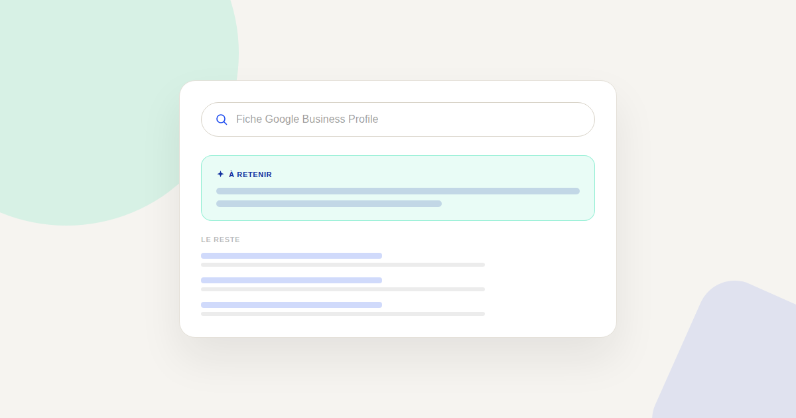

Google Business Profile : le levier local que les PME sous-exploitent
Avant même de parler de netlinking ou de cocon sémantique, la première question que je pose à un client local est souvent la plus simple : « Votre fiche Google Business Profile, elle est à jour ? » La réponse révèle presque toujours une opportunité perdue.

Google Business Profile (GBP) est souvent traité comme une formalité administrative réglée une fois puis oubliée, alors qu'il conditionne directement la visibilité dans le pack local — ce bloc de trois résultats avec carte qui apparaît en tête pour la majorité des recherches locales, souvent avant même les résultats organiques classiques.
Pourquoi ce levier est sous-exploité
Contrairement au SEO classique qui demande du contenu et du netlinking sur la durée, GBP se pilote avec des actions simples et rapides : c'est précisément parce que c'est perçu comme mineur que la plupart des PME le laissent à l'abandon après la création initiale de la fiche, alors que c'est l'un des rares leviers SEO où l'effort et l'impact sont largement disproportionnés en bonne faveur du premier.
Les quatre éléments qui pèsent le plus
La catégorie principale, souvent mal choisie
Choisir une catégorie trop large (« Entreprise ») ou approximative plutôt que la catégorie la plus précise disponible réduit directement les chances d'apparaître sur les recherches spécifiques à votre activité. Cette catégorie est l'un des signaux les plus déterminants pour le classement dans le pack local.
Des photos récentes, renouvelées régulièrement
Une fiche avec des photos vieilles de plusieurs années envoie un signal d'abandon, autant aux visiteurs qu'à l'algorithme. Ajouter régulièrement des photos récentes (locaux, équipe, réalisations) fait partie des signaux d'activité que Google valorise dans son classement local.
Une réponse systématique aux avis
Répondre à chaque avis — y compris négatif, avec une réponse factuelle et posée — envoie un signal d'engagement actif sur la fiche, en plus de rassurer les futurs visiteurs qui consultent les avis avant de choisir. Une fiche avec des avis jamais commentés paraît à l'abandon, même avec une bonne note globale.
L'erreur la plus coûteuse : des horaires obsolètes
Un horaire d'ouverture faux affiché sur Google fait perdre des visiteurs qui se déplacent pour rien, ce qui dégrade la confiance dans votre établissement bien plus durablement qu'une fiche incomplète. C'est l'élément le plus simple à corriger, et pourtant l'un des plus souvent négligé, en particulier autour des jours fériés et des horaires exceptionnels de fin d'année.
Ce que ça change pour une PME avec un point de vente ou un secteur d'intervention local
Contrairement au SEO organique où les résultats mettent souvent des mois à se matérialiser, l'entretien de GBP a un effet quasi immédiat sur la fraîcheur perçue de la fiche. Pour une PME locale, c'est souvent le levier qui rapporte le plus vite au regard du temps investi — avant même de penser au premier article de blog ou au premier lien entrant.
FAQ
À quelle fréquence faut-il mettre à jour sa fiche Google Business Profile ?
Il n'y a pas de fréquence imposée, mais un rythme mensuel (nouvelles photos, vérification des horaires, réponse aux avis en attente) suffit généralement à maintenir un signal d'activité perçu comme sain.
Peut-on avoir plusieurs catégories sur sa fiche ?
Oui, une catégorie principale et plusieurs catégories secondaires sont possibles. La catégorie principale reste celle qui pèse le plus, à choisir avec le plus de précision possible.
GBP remplace-t-il le besoin d'un site web optimisé SEO ?
Non, les deux se complètent : GBP capte une partie significative des recherches locales directement dans les résultats Google, mais le site reste nécessaire pour approfondir, convertir et exister sur des recherches non strictement locales.
Envie d'un audit rapide de votre fiche Google Business Profile ?
Pour aller plus loin, voir la page SEO, et l'article Netlinking en 2026.
Pour continuer sur ce sujet.